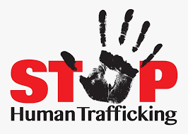

|  | HOME |
|---|
HUMAN TRAFFICKING
Human Trafficking is the recruitment, transportation, transfer, harbouring or receipt of people through force, fraud or deception, with the aim of exploiting them for profit. Men, women and children of all ages and from all backgrounds can become victims of this crime, which occurs in every region of the world.
According to scholar Kevin Bales, author of Disposable People (2004), estimates that as many as 27 million people are in "modern-day slavery" across the globe. In 2008, the U.S. Department of State estimates that 2 million children are exploited by the global commercial sex trade. In the same year, a study classified 12.3 million individuals worldwide as "forced laborers, bonded laborers or sex-trafficking victims". Approximately 1.39 million of these individuals worked as commercial sex slaves, with women and girls comprising 98% of that 1.36 million.
ABOUT
The recruitment, transportation, transfer, harbouring or receipt of persons, by means of threat or use of force or other forms of coercion, of abduction, of fraud, of deception, of the abuse of power or of a position of vulnerability or of the giving or receiving of payments or benefits to achieve the consent of a person having control over another person, for the purpose of exploitation. Exploitation shall include, at a minimum, the exploitation or the prostitution of others or other forms of sexual exploitation, forced labour or services, slavery or practices similar to slavery, servitude or the removal, manipulation or implantation of organs;
GALLARY
CONTACT
Visit us at: Patna, Bihar
Mobile: +91*********
Email: *****@gmail.com